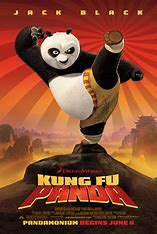

Kung Fu Panda (2008)
Sinopse
Po é um urso panda desajeitado, que trabalha no restaurante de macarrão de sua família. Um dia ele é surpreendido ao saber que foi escolhido para cumprir uma antiga profecia, o que faz com que treine ao lado de seus ídolos no kung fu: os mestres Shifu, Garça, Tigresa, Louva-deus, Macaco e Víbora. Quando o traiçoeiro leopardo da neve Tai Lung retorna, cabe a Po defender o Vale da Paz.
Personagens
- Po: um panda-gigante enérgico, propenso a acidentes e obstinado fã de Kung Fu.
- Mestre Shifu: um velho e severo panda-vermelho, mestre de kung fu dos Cinco Furiosos.
- Mestre Tigresa: uma tigresa-do-sul-da-china mal-humorada e líder dos Cinco Furiosos.
- Mestre Víbora: uma doce e de boa índole víbora verde.
- Mestre Macado: um descontraído macaco-dourado.
- Mestre Louva-a-Deus: um ágil louva-a-deus chinês.
- Mestre Garça: um grou-da-manchúria pragmático e sarcástico.
- Tai Lung: um leopardo-das-neves arrogante e agressivo que anteriormente era o filho adotivo e aluno de Shifu.
- Mestre Oogway: um sábio ancião tartaruga-das-galápagos, mentor do Mestre Shifu.
- Sr. Ping: um ganso chinês e o pai adotivo de Po, que administra um restaurante de macarrão.
- Zeng: um tímido ganso chinês e o mensageiro de Shifu.
- Comandante Vachir: um rinoceronte-de-java arrogante e intimidador que é o diretor da prisão Chorh-Gom, onde Tai Lung está preso.